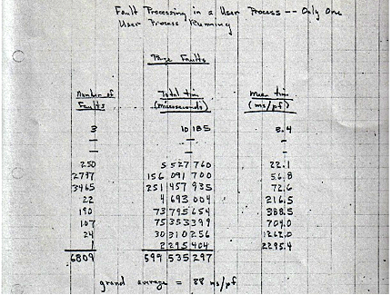

05 May 2014
Thoughts about the early days of Multics with rusty analysis on the subject of Performance Improvement
At the Multics reunion on June 9, 2012 we had some conversations about the early days and that got me thinking about the late 1967 - mid 1969 period of development.
When Multics first started working, it was extremely slow and we had to do a lot of rework to practically everything to get it to the point where it could actually be used by users. We got a big kick in the pants in 1968 when ARPA was considering withdrawing funding which would have terminated the project. At some point during the negotiations we got a do-or-die goal of fall of 1969 for the debut of a real service at MIT. To me this period of time was one of the best. We were severely challenged to design and implement many significant changes, most of which I would call simplifications that would achieve good results but would not have us have to give up any goals or important design concepts. It was fun doing this. This effort helped knit together the people in the three organizations working on this project.
In addition to doing things based on healthy conceptual analysis, gut feelings, and more-learned opinions we built a bunch of performance measurement tools that would allow us to collect data about what was going on. We built two special tools (one of my projects). The first was to collect data for page, segment, and linkage fault processing times. The second was to use the alarm clock to sample what segment was currently being executed in order to understand where the bottlenecks were. A more comprehensive paper about these and other tools and methodologies was written by Jerry Saltzer and me and presented at an Operating Systems Symposium in 1969, and later published in Communications of the ACM and the Peter Freeman book Software Systems Principles. This paper is available here: The Instrumentation of Multics.
I looked through my archives the other day and found a document (by Charlie Clingen to Andre Bensoussan, Dave Vinograd and me -- Dave and I were the designers/implementers of these tools) that had a table of page, segment, and linkage faults collected in April 1968. (I scanned it.) What is most fascinating to me was the Page Fault data. Out of 6,809 page faults with an average of 88 ms/pf there was one page fault that took 2.2954 seconds!
In this same run the average segment fault time was 117.7 ms and there were 3 that averaged 2.9 seconds. The average linkage fault time was 115 ms and there were 6 that averaged 1215 ms. These times exclude the time in lower level faults. There were 6809 page faults, 2487 segment faults and 912 linkage faults. I am not sure what was actually occurring during this experiment -- it may have been booting up to console level. In another experiment that was definitely initialization we had 4,014 page faults for an average of 86.1 ms/pf and there were 2 with an average of 6.5 seconds!

The Multics designers felt that there were lots of good reasons for not all segments to have the same page size. The 645 supported two page sizes: 64 words and 1024 words, but we rarely used the 64 word page size. The designers went further with the concept of a hyperpage that would be a set of pages that would be brought in at once. Different segments could have different hyperpage sizes (I think 1, 2, and 4 pages, but maybe more) with the pages to be located in consecutive locations in memory. To my recollection what we thought was the cause of that 2 second page-fault was that it was for a 4-page hyperpage that required finding 4 adjacent pages to evict following the least-recently-used algorithm for selecting pages and depending on the history that might require moving lots of pages around. Addressing this by no longer implementing hyperpages (and another similar concept called page batching that would bring in adjacent pages at a page fault to anticipate future usage) was an easy fix to yield considerable improvement.
In general, one of things that we did with great payoff was to address the many variable sized items that required space allocation and moving things around. For example segments could be anywhere between 1 page and 256 pages long. Filemaps for storing the disk addresses of each page were variable sized depending on the segment size. There was a 10 word header for each segment and since each page required a half word to store the disk address a 1K segment would have an 11 word filemap; a 256K segment would have a 138 word filemap. When a segment grew, its filemap would have to grow and be relocated within the directory segment. An important decision was to restrict maximum segment size to be 64K and make all filemaps be 42 words. There was an additional space allocation problem in directory management for in addition to segments there were links and the link value could be variable sized. We decided that we would make directory entry for a link the same size as that for a segment and thus there were 42 words available to store the link value. This is where the 168-character pathname limit came from.
Continuing along these lines, PL/I supported fixed length and variable length character strings. There was no EIS and thus string operations took multiple instructions; variable length ones took more because of the need to interpret the length field and the need for dynamic space allocation for the storage of such strings. We decided to use only fixed length character strings. This change and the above change for filemap/link storage is why there are those char (168) declarations.
Another strategy was to deal with ring crossing. The user was in ring 32, the linker and segment name management was in ring 1, and the rest of the supervisor was in ring 0. Ring crossing was expensive and partly because the hardware didn't support rings there needed to be a copy of the descriptor segment for each ring to reflect different access rights and thus any change/addition to a descriptor segment entry had to be made in three places. This was the motivation for moving the linker (and segment name management) into ring 0 (one of my projects) to avoid extra ring crossing on linking as well as extra descriptor segment maintenance. We didn't reintroduce ring 1 (for other purposes) until much later when we had hardware support for rings and many other performance improvements had been made. The hardware supported only 8 rings -- 9 bits of storage instead of 21 to express ring numbers.
For several years we had no binder and thus each separately compiled program occupied its own segment -- actually two since the linkage section was in a separate segment since it had to be writable. In a December 1967 printout I note that 667(8) or 439 segment numbers were used for a supervisor process -- not counting initialization segments of which there were 222(8) or 146. We created a combined linkage segment which halved the number of segments and then developed the binder which radically reduced both the number of linkage faults and number of segment numbers.
This discussion reminded me of this acronym in jest for Multics:
Many Unusually Large Tables In Core Simultaneously
The alarm clock driven segment usage metering allowed us to identify and repair many bottlenecks because we could determine how much spent in each module. This was especially easy to interpret before we had the binder since each program was in a separate segment.
Very significantly we made a number of modifications to the PL/I compiler so that commonly used constructs would generate good code. We carefully defined a subset of the language called REPL (restricted EPL) that included only these language constructs and then modified most of the system to only use REPL. We built two tools to be used at software submission time -- source_submission_test, and object_submission_test that looked for known-to-be-bad things so as to prevent the installation of potentially poor performing programs.
We rewrote various commands and components with simplification of function in mind. An example of one change was Bob Daley's writing of qedx, to replace qed, the editor of choice; some of the qed features were removed to keep it simple and help make it fast. The EPL compiler was a memory hog so we created the epl daemon and people submitted their compilations to it so that there would only be one going on at a time. With all these changes we never had to abandon any important design principles while achieving incredible progress.. I think this was a very significant attribute of the project. I've seen many other projects that permanently abandoned important principles in order to make a schedule.
I do point out that in that era almost no-one wrote system software in anything but assembly language. Choosing PL/I made it much easier to make large changes in a small amount of time. And optimizing the compiler to generate very good code meant that many things could get faster by merely recompiling.
This leads me to write a few words about how the manner of people working together affects the end result. When I first joined the project in February 1967 working for GE there was a pretty large disconnect between the Project MAC people and the GE people even though we were in the same building 2 floors apart. Some of the GE people would say that the MIT people had no concept of realism in terms of schedules or practicality while the MIT people would say that GE had messed up; the hardware was late and faulty, the contracted-for PL/I compiler was absent, and people were willing to jettison important objectives, etc. When Charlie Clingen became CISL manager and I became development manager we worked on this, partly by adjusting assignments so that people from both organizations were working together and sharing offices. This made a big difference to the working relationships. I remember once when a person from GE quit, several MIT people said "I didn't even know he worked for GE". A bit later, when Bob Daley left, I became overall project manager with an office on the MIT floor. I'd say it was truly a joint MIT and GE/Honeywell project.
As Multics became a serious product after Honeywell bought the GE computer business, CISL expanded and hired some of the MIT people. MIT continued to play a key role with some development responsibilities and as the site where software was first installed for quite a few years. I suspect such an arrangement of a University R&D group and a corporate product development group working so closely is very rare and was a good model for technology transfer.